The rusty world is full of mysteries—and some of the solar system's most extreme geology. Learn more about Earth's smaller, colder neighbor.
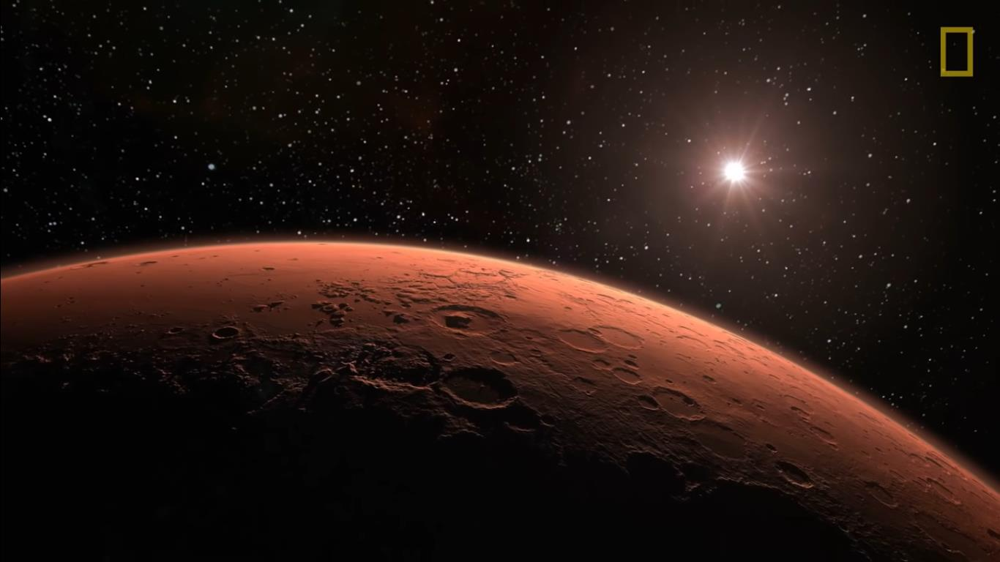The rusty world is full of mysteries—and some of the solar system's most extreme geology. Learn more about Earth's smaller, colder neighbor.
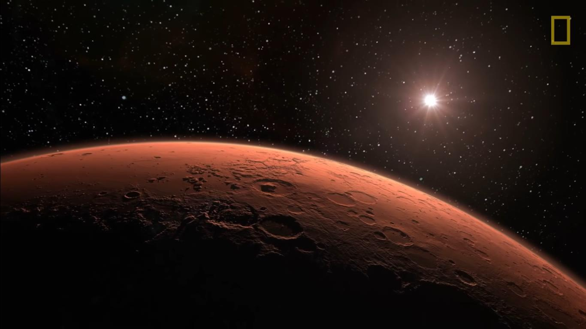The red planet Mars, named for the Roman god of war, has long been an omen in the night sky was symbolic of blood and war.
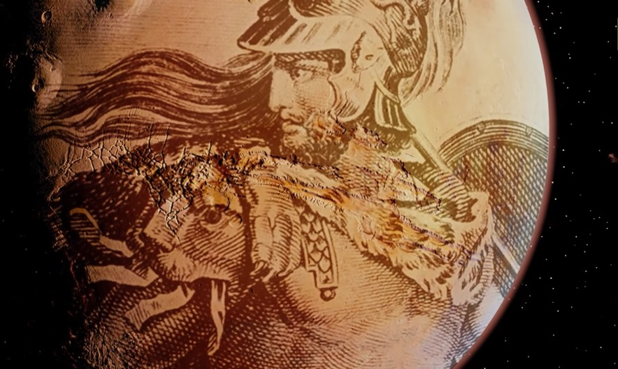but to many people today
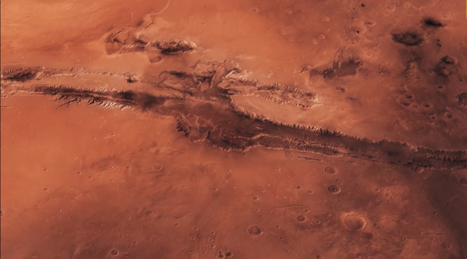the red planet may hold the key for a bright new future for humanity
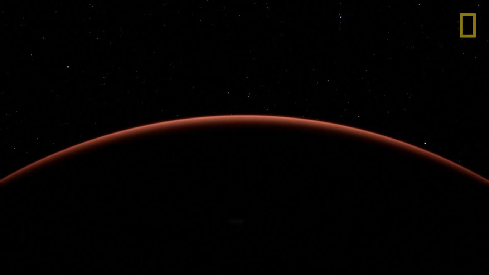the story of mars began about 4.5 billion years ago when gas and dust swirl together to form the fourth planet from the sun
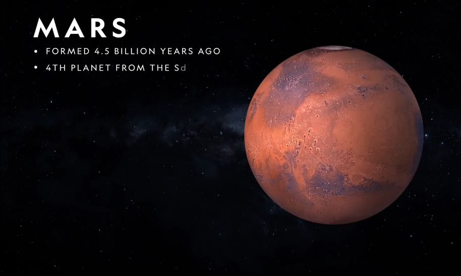the solar system with a diameter just shy of the width of africa
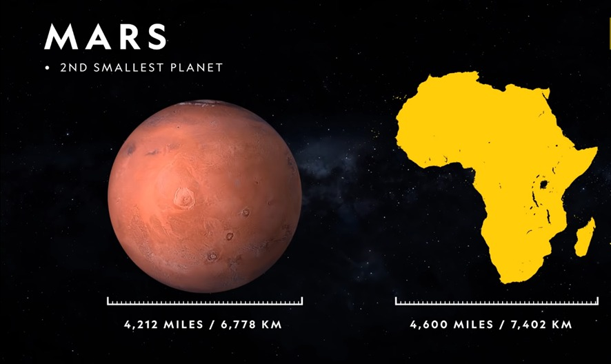at the center of the planet is a core made of iron nickel and sulfur
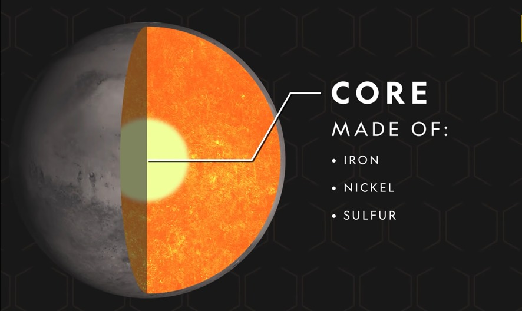enveloping the core is a rocky mantle made of silicate minerals
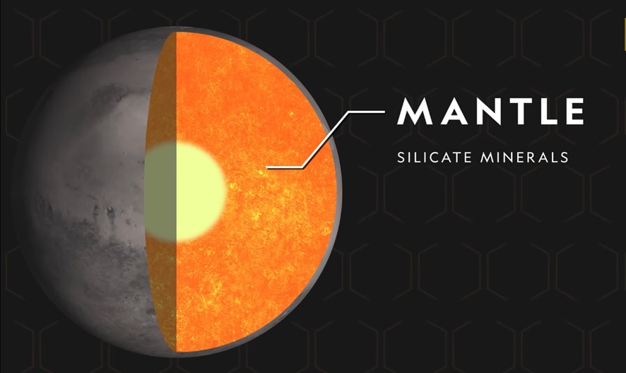and a crust rich in iron
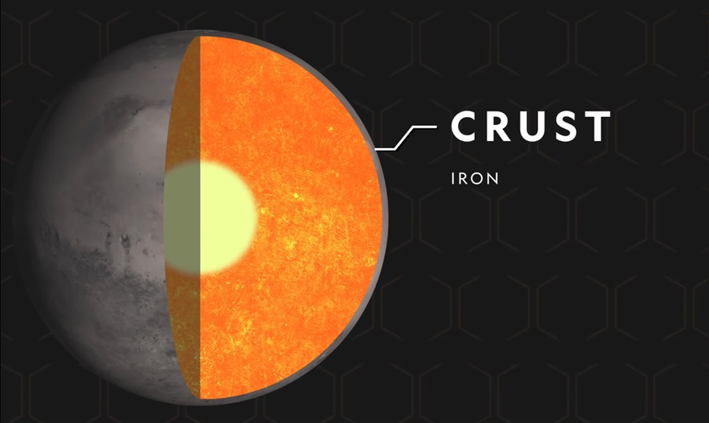these iron minerals react with the trace amounts of oxygen in mars's atmosphere
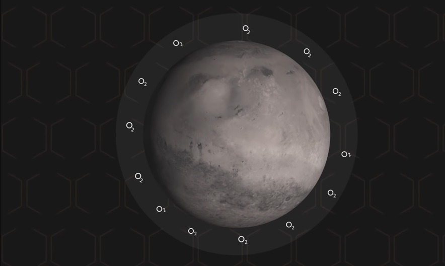
giving the planet its signature reddish hue
today mars is dry desolate and cold with temperatures dropping as low as negative
225 degrees fahrenheit
but billions of years ago the planet was
much warmer more geologically active and
had a watery surface
lake beds and river valleys snake along
the face of mars indicating that liquid
water was for a time present
about 50 million years ago soon after earth's dinosaurs died out mars volcanoes also went extinct
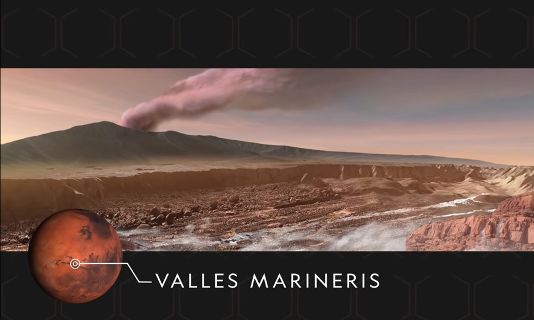because of factors such as the presence of water some scientists believe life may have existed on the red planet and may exist again
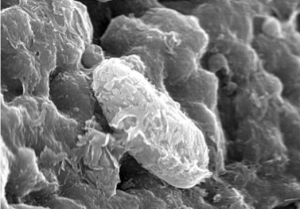 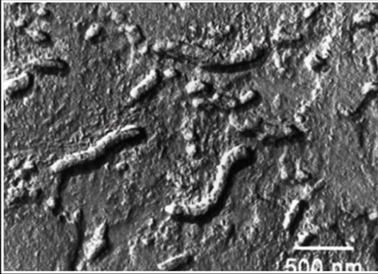